Commute Exposure
2025
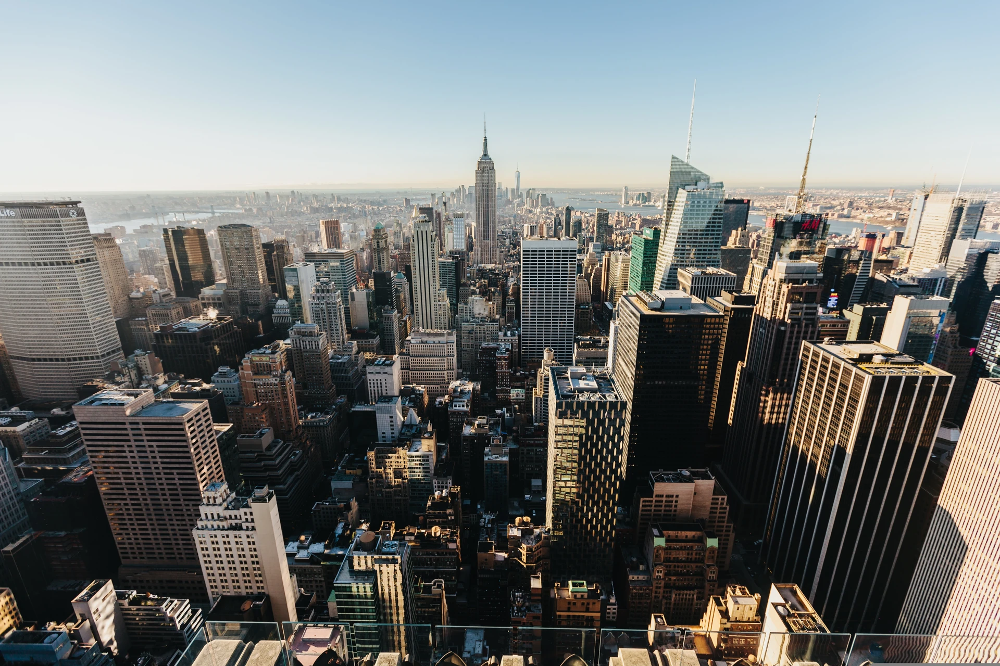
Muyi Zhu is currently a Research Assistant in the Department of Geography at the University of Hong Kong, supervised by Prof. Junshi Xu. Muyi is expected to begin his PhD studies at ETH Zurich in January 2027, under the supervision of Prof. Bryan T. Adey.
His research focuses on road safety, environmental exposure, and active urban mobility, with a particular emphasis on evaluating the effectiveness of infrastructure interventions for pedestrians, cyclists, and micromobility users. He applies geospatial modelling, machine learning, and causal inference to assess how infrastructure and built-environment interventions affect actual and perceived safety.
Muyi Zhu received a B.Eng. in Urban and Rural Planning from Beijing Forestry University in 2024 and an MSc in Geospatial Data Science from the University of Hong Kong in 2025.
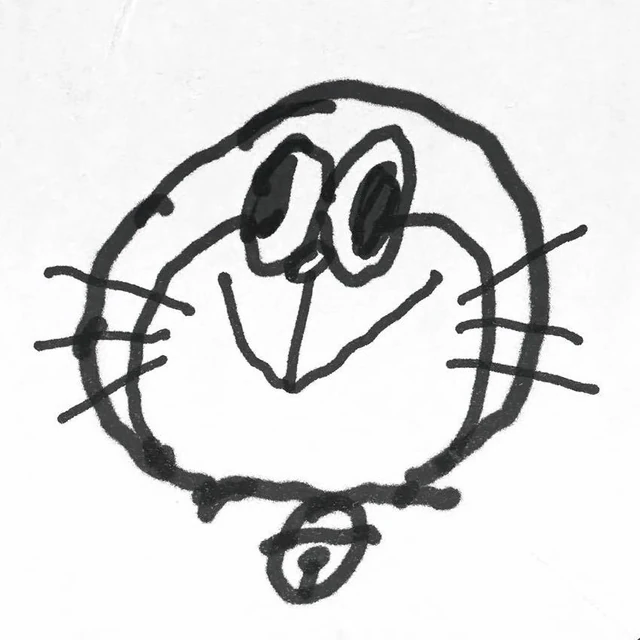
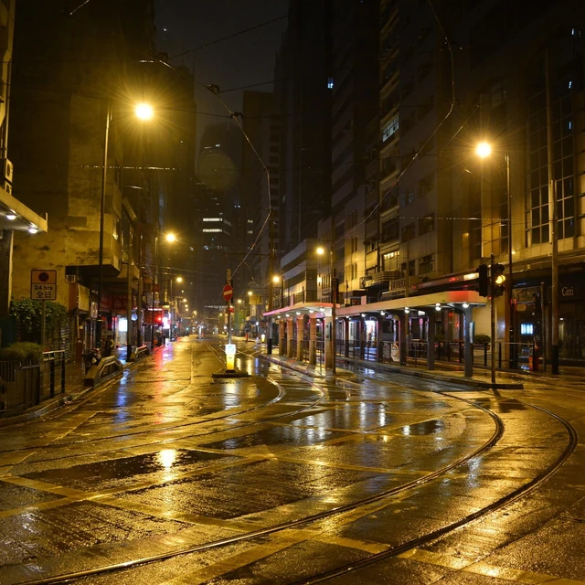
2026
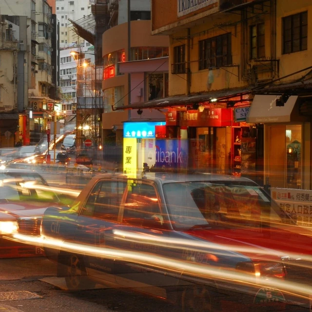
2025
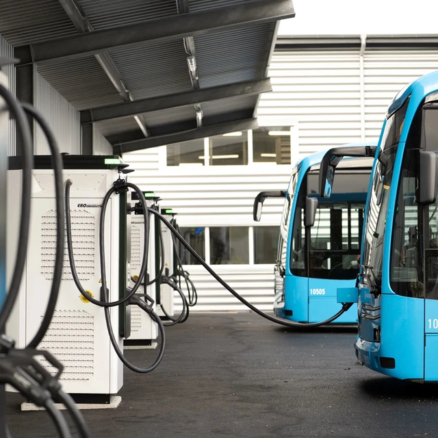
2025
2025
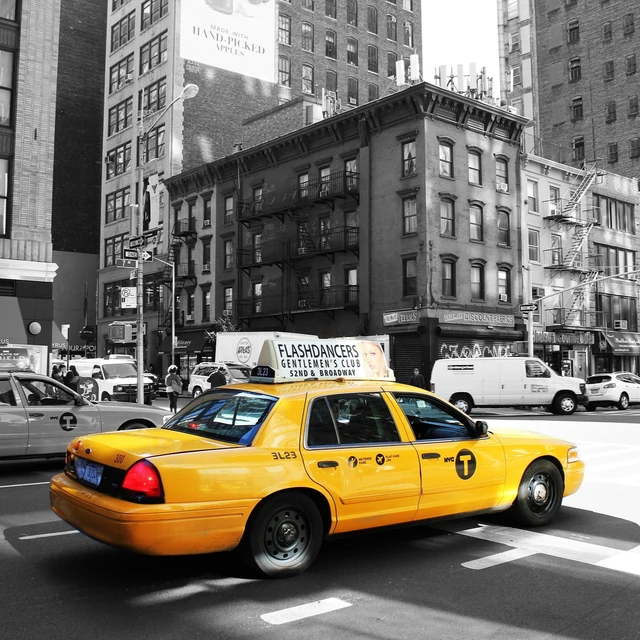
2025
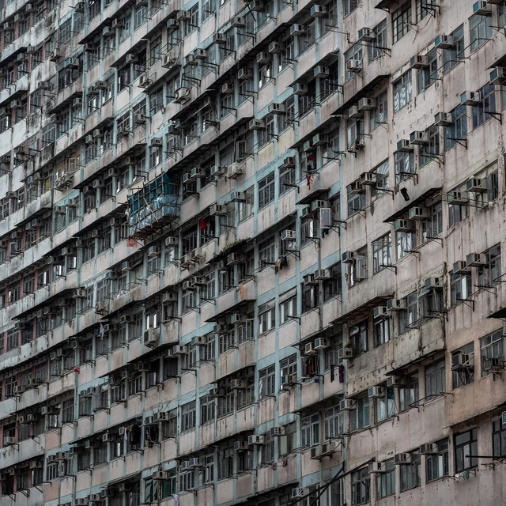
2025
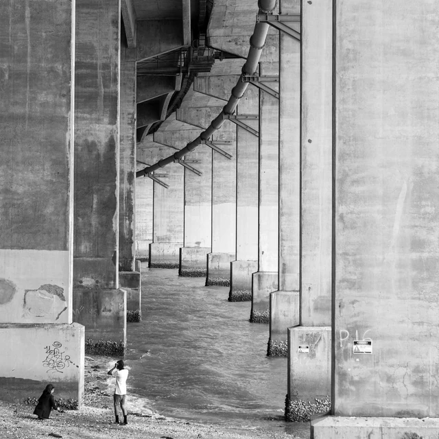
2024
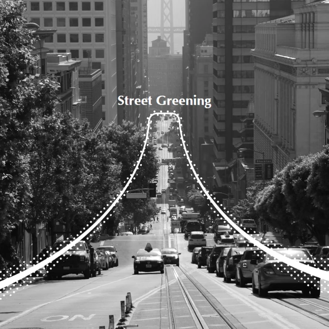
2023
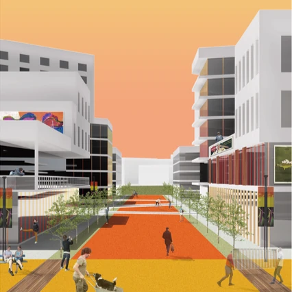
2023
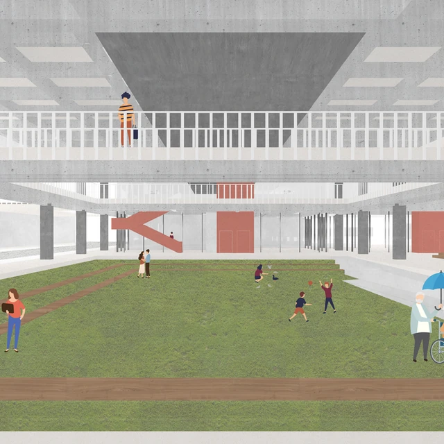
2022
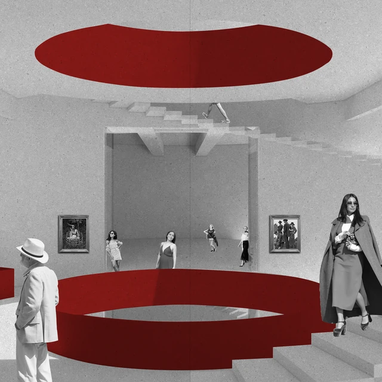
2021